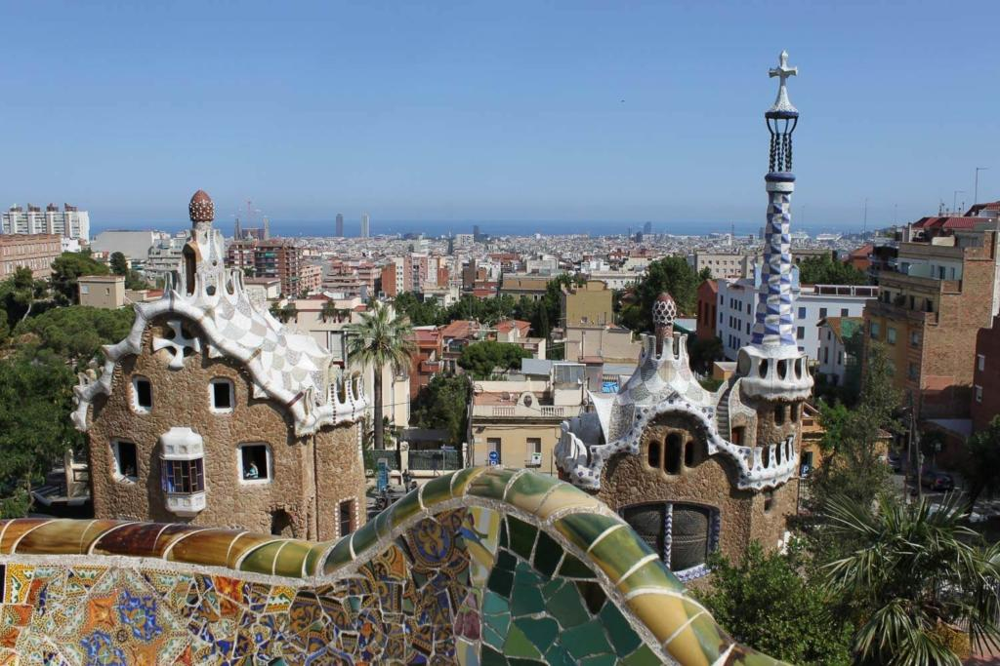
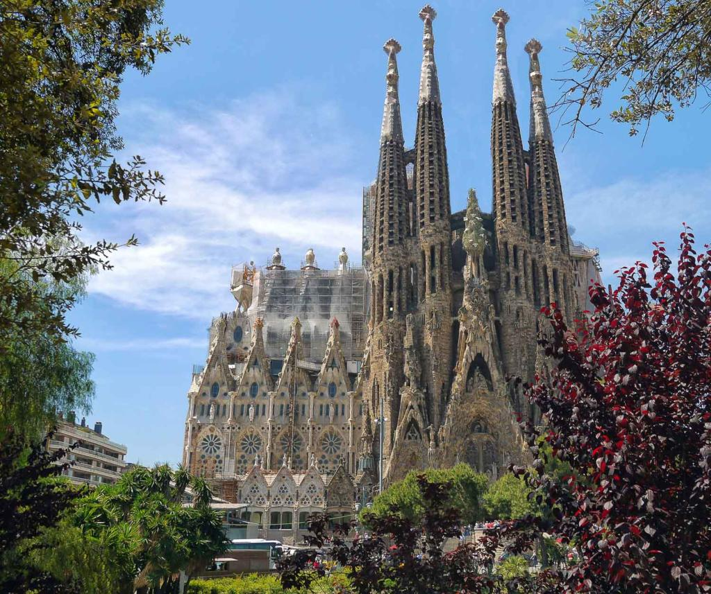
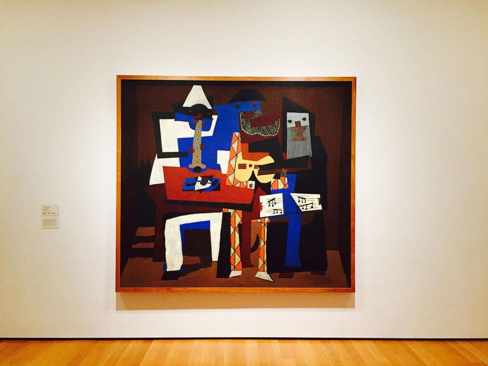

Barcelona, que belo horizonte. Barcelona, como uma joia ao Sol. Por ti serei gaivota do teu belo mar.
A história de Barcelona estende-se ao longo de mais de 4000 anos, desde finais do período neolítico, com os primeiros restos encontrados no território da cidade, até à época actual. A zona de Barcelona foi habitada por povos iberos (laietanos), cartagineses, romanos, judeus, visigodos, muçulmanos e cristãos.
dos vestígios de povoados iberos e cartagineses, o verdadeiro nascimento da cidade produziu-se na época romana. Esse povoado foi evoluindo até se converter num dos principais portos do mar Mediterrâneo ocidental, alcançando na Idade Média a primazia sobre o resto dos condados catalães e convertendo-se na capital do Principado da Catalunha e da Coroa de Aragão.
Após a união de Castela e Aragão, e pese ter deixado de ser capital de um estado independente, Barcelona sempre gozou de uma posição de grande relevância no desenvolvimento político, social e económico do estado espanhol. Mais recentemente, acontecimentos como os Jogos Olímpicos de 1992 e o Forum Universal das Culturas colocaram Barcelona como uma cidade mundialmente reconhecida e celebrada, importante foco turístico e cultural, bem como centro financeiro e de congressos de reconhecido prestígio.
Planejado por Gaudí no início do século XX, o Park Guell é classificado atualmente como Patrimônio da Humanidade pela Unesco, e considerado um dos pontos turísticos de Barcelona mais populares entre os visitantes.
Com um paisagismo belíssimo, o parque possui algumas características claras do estilo de Gaudí, como a valorização de formatos e formas bem definidas. Além disso, dentro do parque fica a antiga casa de Antoní Gaudí, (onde ele morou por mais de 20 anos) que funciona como um museu, com vários pertences pessoais do arquiteto em exibição.
Muitos consideram a Igreja La Sagrada Familia como o principal ponto turístico em Barcelona, devido a sua importância e a sua estrutura majestosa e imponente.
A construção da obra teve início no final do século XIX, também sob o comando de Antoni Gaudí. Porém, uma das questões mais curiosas desse monumento é o fato da fachada da La Sagrada Familia ainda não ter sido terminada.
O Museu Picasso é imperdível para quem aprecia arte, sendo reconhecido entre os museus mais importantes da Espanha. Apesar de ter nascido na região sul do país, Pablo Picasso viveu por muitos anos em Barcelona e desenvolveu uma conexão especial com a cidade.
